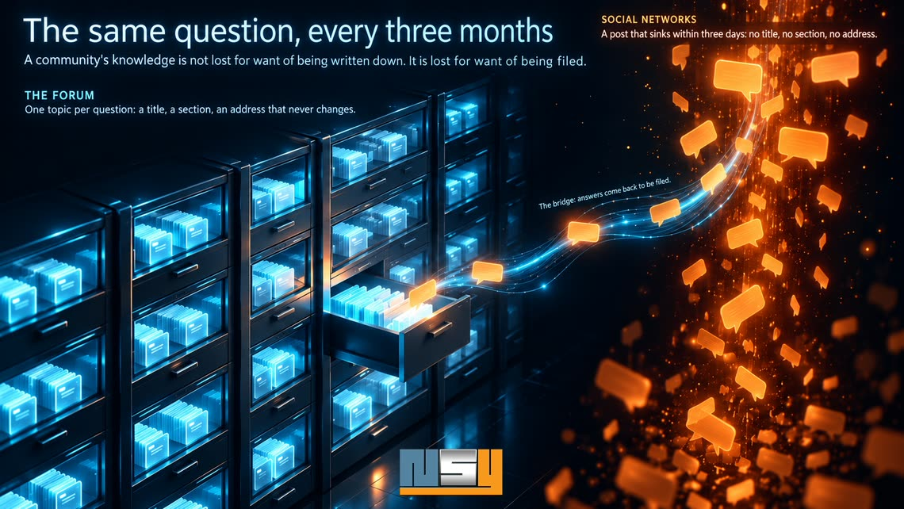

The same question,
every three months
In a Facebook group of enthusiasts, someone asks how to cure an unstable idle. An old hand spends twenty minutes answering, photos included. Three months later the question comes back, almost word for word — and the old hand types the answer again, because nobody can find the first one, not even its author. A community's knowledge is not lost for want of being written down. It is lost for want of being filed. Forums knew how to file it; we moved to places where nothing gets filed. Lessons from PRV Concept, where the forum, opened in 2008, is once again the centrepiece.

A forum files, a social network scrolls
On a forum, a question becomes a topic. It gets a title, it goes into a section, it receives an address that will never change. Whoever looks for the same thing in three years' time will find it: through the forum's search, through the section, or through Google.
On a page or in a group, the same question becomes a post. It lives three days at the top of the feed, then sinks. It has no title, no section, no address anyone can cite. The internal search does not find it, search engines almost never index it, AI assistants do not read it.
The social network won because it is easy: everyone is already there, you answer from your phone, nobody has to create an account. Those are good reasons. But none of them says where the answers go.
What eighteen years of filing produced
The PRV Concept forum, run by the association of PRV V6 engine enthusiasts, is eighteen years old. The association is chaired by NSY's founder: it is our laboratory, and everything below runs there in production. The forum holds over three hundred sections and close to thirteen million characters of discussion. Topics opened in 2008 still carry the thread of a restoration: people come back to them, add to them, cite them.
That filing has a value you can measure. Over ninety days, at the end of summer 2026, the forum brought 63% of the visits coming from Google across the whole domain: 628 clicks out of 983, spread over 836 different pages. Not one star page: hundreds of topics, each answering the precise question that someone, somewhere, has just typed.
No Facebook page produces that. Not because people write worse there, but because nothing written there has an address.
The archive also fades from the inside
An old forum has its own leak, though, and it is a silent one. For years, members illustrated their posts with photos uploaded to free image hosts. Those hosts shut down, one after another.
In August 2026, we counted. 5,205 posts displayed images hosted elsewhere: 29,470 addresses, across 934 different hosts. 13,646 were already gone. A single service, by closing, had taken 5,400 with it.
The posts themselves were still there: nobody had noticed anything. But a restoration tutorial without its photos is no longer a tutorial.
Not choosing
Faced with this, two reflexes. The first: abandon the forum and bet everything on social networks, since that is where the audience is. The second: migrate everything to a new tool. The first gives up the memory, the second puts it at risk — a migration always loses something.
We did something else: keep the forum as the base, and plug everything else into it.
Rescue first. The images still alive were brought back onto the association's server, and the posts repointed to their copies: 560 topics got their photos back. The 1,964 thumbnails lost in an old migration were regenerated. And so that the leak does not start again, the forum now accepts photos exactly as they come out of a phone: no more need for an outside host.
Plug in the social networks, both ways. Each new topic from the public sections is prepared for the Facebook page and for Instagram, as an animated card with the link to the thread, and only goes out after a human has approved it: the first three automatic departures had relayed spam, and the queue was born that day. Members' classified ads, for their part, never go out. Above all, the way back exists: comments left on the networks come back into the topic, copied in full. The decision fits in one sentence, written down the day it was taken: "it will enrich the forum's database with the information that gets lost on social networks". The networks remain the place where people talk; the forum becomes once more the place where people find.
Make the filing visible. Every topic is declared to Google under its permanent address, and the site tells AI assistants where to read. Passing visitors get a preview of the topic and an invitation to sign up; search engines get the full text, declared as members-only content under Google's rules.
When the archive answers by itself
A filed base can do what a news feed never will: answer.
The site's assistant — Père Hervé, the workshop foreman with a piston for a head — is wired live into the forum. Ask him a workshop question and he invents nothing: he searches the threads, cites the topic that answers it by its exact title, and gives the link. The question that came back every three months finds its answer at any hour, and the old hand no longer has to type it again.
He also watches over what nobody saw. In September 2026, the forum held 411 topics left without an answer: someone had asked, nobody had replied. The assistant drafts a reply when the archives contain the material for it — and nothing goes out before a human has read and approved it. Without a source, he explains nothing: he acknowledges the question, asks one of his own, and calls on those who own the car.
The same material feeds the rest: a 702-entry FAQ, every answer sourced, and a forum readable in English, titles and sections included, for members from elsewhere.
What it takes to make this work
None of this is magic, and not all of it applies everywhere.
- Hosting that can schedule tasks. The bridge to the networks, the watch, the image rescue all run at fixed times. Without a scheduler, half of the setup is missing.
- Access to the forum's database. That is what the assistant queries.
- An up-to-date forum, one that can be restyled without touching its core: its security updates must keep installing.
- A subscription to a language model, in the association's name. Free tiers run out mid-month, and the assistant falls silent.
- Someone who approves. The machine drafts, a human decides.
- A community still alive. You can rescue an archive; you cannot recreate members.
What we don't migrate
At the end of the job, phpBB is still phpBB. Topics have the same address, members the same account, and eighteen years of posts are where they were. What changed is that this memory is seen again, fed again, and answers.
Your community may have moved to social networks. Its memory stayed on the forum. It is not too late to go and get it.
Do you run a phpBB forum? NSY offers a complete package for sites that live around a forum: rescue of the archive and its images, a look that matches the website without migration, a two-way bridge with social networks, an assistant that answers from the topics, a watch on questions left unanswered.
Associations, clubs, communities of enthusiasts: get in touch. We always start with a survey of your archive; the feasibility questionnaire takes ten minutes.